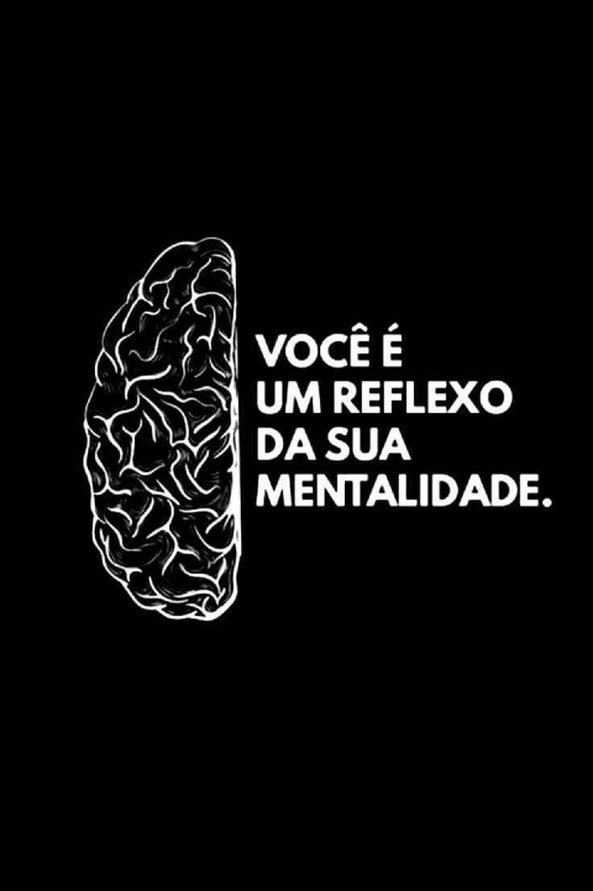
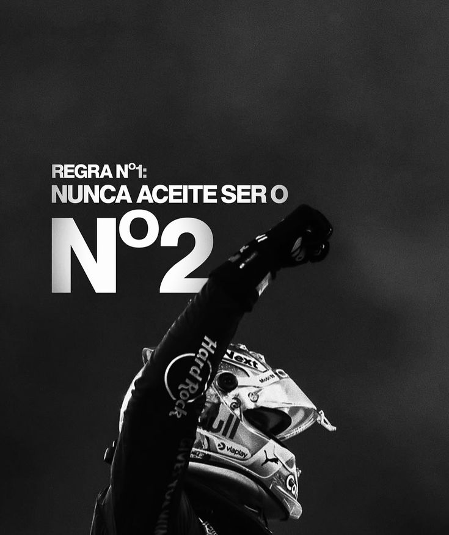
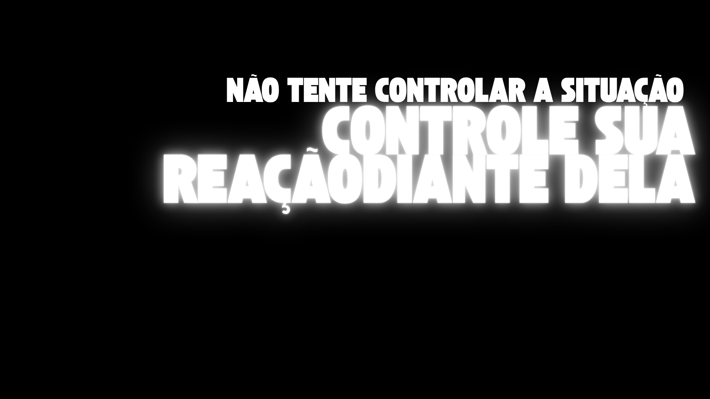
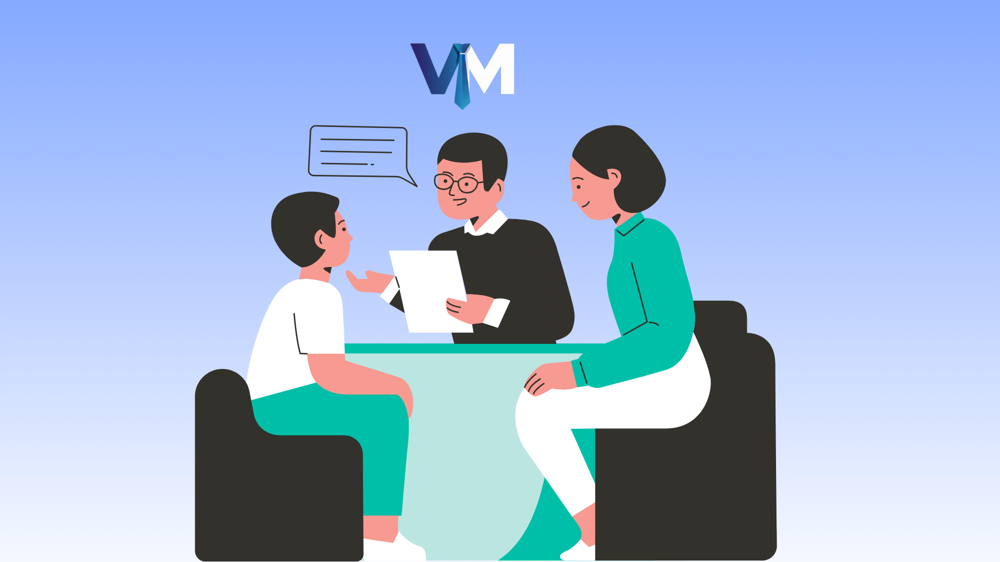

Olhe para Dentro 🧘♂️
O autoconhecimento é o ponto de partida. Entender suas forças, fraquezas e padrões de pensamento é a chave para o controle da sua vida.
Desenvolva uma mentalidade inabalável para superar desafios e alcançar a alta performance em todas as áreas da vida.
Descubra o Poder
Sua percepção do mundo molda sua realidade. Uma mentalidade forte não significa nunca ter problemas, mas sim ter as ferramentas internas para enfrentá-los com coragem e resiliência. É a habilidade de transformar obstáculos em oportunidades e críticas em combustível para o crescimento.
Na VitalMan, acreditamos que o desenvolvimento mental é a base para uma vida plena e bem-sucedida. Cuidar da mente é o primeiro passo para construir a vida que você deseja.

O autoconhecimento é o ponto de partida. Entender suas forças, fraquezas e padrões de pensamento é a chave para o controle da sua vida.

Resiliência é a capacidade de se recuperar de adversidades. Não se trata de não cair, mas de quantas vezes você se levanta mais forte.
Em um mundo de distrações, o foco é um superpoder. A disciplina transforma seus objetivos em realidade, um passo de cada vez.

Inteligência emocional é saber identificar, entender e gerenciar suas próprias emoções e as dos outros. É essencial para liderar e se relacionar.

Vulnerabilidade não é fraqueza. Compartilhar o que você sente, buscar ajuda e ouvir os outros constrói conexões e fortalece a mente.
Mindfulness e meditação são práticas poderosas para reduzir o estresse, aumentar a clareza mental e encontrar paz no caos do dia a dia.
Anote três coisas pelas quais você é grato todos os dias. Isso muda sua perspectiva.
Reserve um tempo diário longe das telas para permitir que sua mente descanse e se recupere.
O exercício físico é um dos mais poderosos antidepressivos e ansiolíticos naturais.
Alimente sua mente com novas ideias e conhecimentos. A leitura expande seus horizontes.
Não guarde tudo para si. Conversar com um amigo, familiar ou profissional pode aliviar o peso.
Concluir pequenas tarefas gera um senso de conquista e motivação para desafios maiores.
Uma boa noite de sono é fundamental para a recuperação mental, consolidação da memória e regulação do humor.
Comece com pouco tempo. A meditação ajuda a treinar o foco e a reduzir a reatividade emocional.